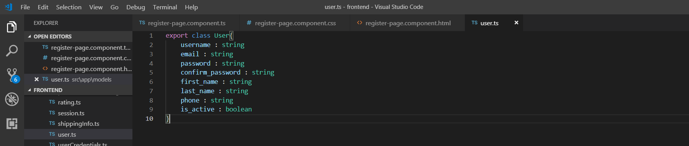
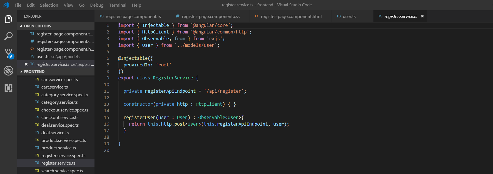
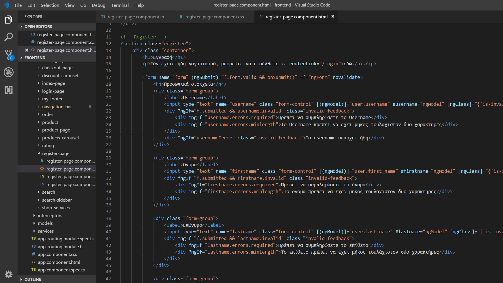
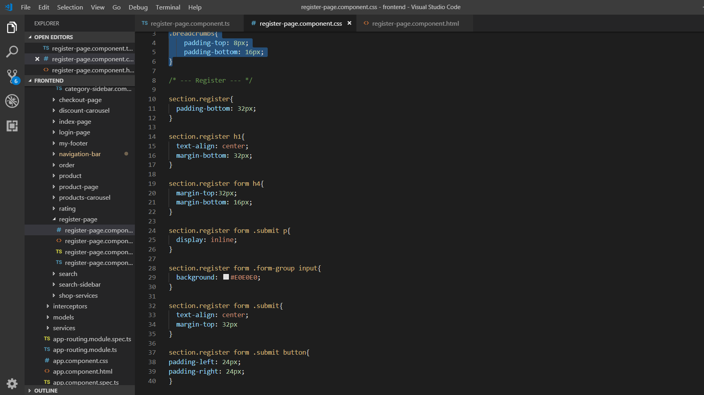
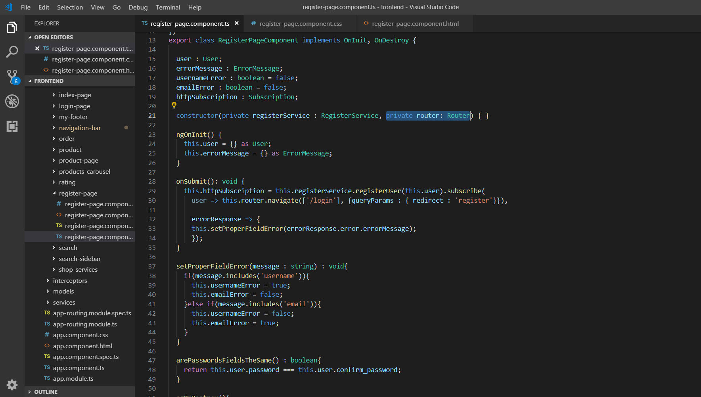

Θα δημιουργήσουμε το Angular - register-page component component, στο οποίο ο χρήστης θα πραγματοποιεί την εγγραφή του, αφού συμπληρώσει τα στοιχεία του σε μια φόρμα.
Δημιουργούμε ένα UserRepository στο springeshop.repositories.
package springeshop.repositories;
@Repository
public interface UserRepository extends JpaRepository<User, Integer> {
User findById(int id);
User findByUsername(String userName);
User findByEmail(String email);
}
Δημιουργούμε τα UserService και UserServiceImpl στο springeshop.service .
package springeshop.service;
public interface UserService{
User findById(int id);
User findByUsername(String userName);
User findByEmail(String email);
boolean doesEmailExist(User user);
boolean doesEmailExist(String userEmail);
boolean doesUserExist(User user);
boolean doesUserExist(String username);
Uboolean addUserAndIsSuccess(User user);
}
package springeshop.service;
@Service("userService")
@Transactional
public class UserServiceImpl implements UserService{
@Autowired
private UserRepository userRepository;
@Override
public User findByUsername(String userName) {
return userRepository.findByUsername(userName);
}
@Override
public User findByEmail(String email) {
return userRepository.findByEmail(email);
}
@Override boolean addUserAndIsSuccess(User user) {
boolean isSuccess = false;
try {
userRepository.save(user);
isSuccess = true;
} catch (DataAccessException exception) {
System.out.println(exception);
isSuccess = false;
}
return isSuccess;
}
@Override
public boolean doesUserExist(User user) {
return findByUsername(user.getUsername()) != null;
}
@Override
public boolean doesEmailExist(User user) {
return findByEmail(user.getEmail()) != null;
}
@Override
public boolean doesUserExist(String username) {
return findByUsername(username) != null;
}
@Override
public boolean doesEmailExist(String userEmail) {
return findByEmail(userEmail) != null;
}
@Override
public User findById(int id) {
return userRepository.findById(id);
}
}
Δημιουργούμε ένα AuthorityRepository στο springeshop.repositories.
package springeshop.repositories;
@Repository
public interface AuthorityRepository extends JpaRepository<Authority, Integer> {
Authority findByUser(User user);
}
Δημιουργούμε τα AuthorityService και AuthorityServiceImpl στο springeshop.service .
package springeshop.service;
public interface UserService{
boolean saveAuthorityAndIsSuccess(Authority authority);
}
package springeshop.service;
@Service("authorityService")
@Transactional
public class AuthorityServiceImpl implements AuthorityService{
@Autowired
private AuthorityRepository authorityRepository;
@Override boolean saveAuthorityAndIsSuccess(Authority authority) {
boolean isSuccess = false;
try {
authorityRepository.save(authority);
isSuccess = true;
} catch (DataAccessException exception) {
System.out.println(exception);
isSuccess = false;
}
return isSuccess;
}
}
Δημιουργούμε τoν RegisterApiController στο πακέτο springeshop.controller
package springeshop.controller;
@RestController
@RequestMapping("/api")
public class RegisterApiController{
public static final Logger logger = LoggerFactory.getLogger(RegisterApiController.class);
@Autowired
private UserService userService;
@Autowired
private AuthorityService;
@Autowired
private BCryptPasswordEncoder passwordEncoder;
...
Προσθέτουμε τη μέθοδο registerUser στον RegisterApiController. Εάν υπάρχει ήδη χρήστης, με αυτό το username ή email, επιστρέφουμε status 409 CONFILICT.
@RequestMapping(value = "/register", method = RequestMethod.GET)
public ResponseEntity<?> registerUser(@Valid @RequestBody() User user{
if(userService.doesUserExist(user)){
logger.error("Unable to register. A user with name {} already exist.", user.getUsername());
return new ResponseEntity<>(new ErrorMessage("Unable to create. A user with username" + user.getUsername() + " already exists"), HttpStatus.CONFLICT);
}
ifuserService.doesEmailExist(user){
logger.error("Unable to register. A user with email {} already exist.", user.getEmail());
return new ResponseEntity<>(new ErrorMessage("Unable to create. A user with email" + user.getEmail() + " already exists"), HttpStatus.CONFLICT);
}
Κρυπτογραφούμε τον κωδικό του χρήστη, αποθηκεύουμε το χρήστη και το ρόλο του στη βάση. Αν αποθηκεύτηκαν επιτυχημένα επιστρέφουμε το χρήστη με status 201 CREATED, αλλιώς επιστρέφουμε INTERNAL_SERVER_ERROR.
user.setPassword(passwordEncoder.encode(user.getPassword()));
user.setIs_active(true);
if(userService.doesUserExist(user)){
Authority authority = new Authority();
authority.setUser(user);
if(authorityService.saveAuthorityAndIsSuccess(authority)){
return new ResponseEntity<>(user, HttpStatus.CREATED);
}
}
return new ResponseEntity<>(HttpStatus.INTERNAL_SERVER_ERROR);
Δημιουργούμε το component register-page και το service register και το τοποθετούμε στο φάκελο components.
ng generate component category-page
ng generate service register
Δημιουργούμε ένα μοντέλο User, σύμφωνα με το αντίστοιχο entity
Θα χρησιμοποιήσουμε τη μέθοδο registerUser() του registerUser, για να πραγματοποιήσουμε το HTTP αίτημα και να εγγράψουμε το χρήστη.
register-page.component.html
Εισάγουμε τα template <navigation-bar> και <my-footer>. Δημιουργούμε μια φόρμα με πολλά πεδία και ένα κουμπί submit.
register-page.component.css
Κάνουμε validation το input του χρήστη. Όταν πατήσει το submit, δεν υπάρχει ήδη χρήστης με αυτό το email ή username, τότε εισάγεται στον πίνακα users.
register-page.component.ts
